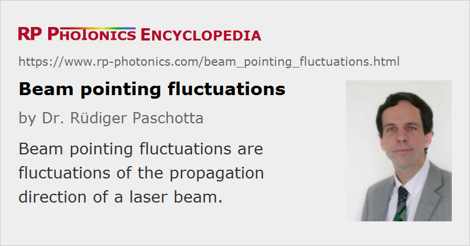

Beam Pointing Fluctuations
Definition: fluctuations of the propagation direction of a laser beam
German: Strahlrichtungsfluktuationen
How to cite the article; suggest additional literature
Author: Dr. Rüdiger Paschotta
The direction of the output beam of a laser is subject to some beam pointing fluctuations, which can in some cases cause significant problems – e.g., when the beam must be coupled into a single-mode fiber, or when the beam must precisely hit a target at a large distance. For such reasons, a quantitative measure for the beam pointing stability (see below) can be of importance.
Physical Origins of Beam Pointing Fluctuations
Beam pointing fluctuations in a bulk laser can have different origins:
- Mechanical vibrations (as picked up from the ground, for example) and drifts (e.g. induced by thermal effects) can affect the alignment of optical elements, in particular of mirrors of the laser resonator. In that way, the position of the resonator modes and thus of the output beam can be affected.
- There can also be direct thermal effects on the beam position. In particular, thermal lensing in the gain medium (e.g. a laser crystal) may be associated not only with a focusing action, but also with some beam deflection. This is particularly the case when the pump beam profile is not totally symmetric, or not well aligned with the resonator axis.
It is important to note that a certain tilt of a resonator mirror does not necessarily translate into a tilt of equal size of the output beam. Instead, it generally leads to some combination of a (larger or smaller) tilt with some shift (offset) of the beam. The type of that influence depends on the whole resonator design (as discussed in the article on alignment sensitivity). For a linear resonator, the alignment sensitivity can be very different in the two stability zones, and can even diverge near the edge of such a zone. The alignment of different resonator mirrors can also very much differ in terms of sensitivity. Such issues have important implications for the optimization of pointing stability (see below).
Quantification of Beam Pointing Stability
The beam pointing stability of commercial laser products is often quantitatively specified. Unfortunately, such specifications are often not precise or even meaningless. A useful specification of angular fluctuations has to observe a number of important issues:
- It must be clear whether the quoted numbers apply to a beam deviation from some reference axis, or to the total width of the possible angular range, or to a maximum angular change within a certain time interval.
- It should be made clear whether the numbers are typical values, absolute limits (not to be exceeded for operation under the specified conditions), or r.m.s. (root-mean-square) values.
- The conditions of operation need to be specified, including e.g. the stability of ambient temperature, the required warm-up time (during which larger fluctuations may occur), operation with constant or variable output power, etc.
- Furthermore, the time scale or frequency range has to be specified. Ideally, a range of noise frequencies is specified, where the lower value is related to the maximum measurement time and the higher one to the measurement bandwidth. Specifications with a small lower noise frequency include long-term drifts. In other cases, only the fast fluctuations are of interest, and a frequency range of e.g. 100 Hz to 10 kHz may be appropriate.
- Finally, it must of course be clear to which beam the numbers apply: e.g. to the beam as directly obtained from the laser, or to a beam after a collimation lens. This is very important, since an optical setup outside the laser in general changes the beam pointing stability (see below).
The magnitude of angular fluctuations alone is actually often not sufficient to calculate the effect of beam pointing fluctuations in an application; it can also be important how large parallel beam offsets occur, and how these are correlated with angular fluctuations.
Influence of External Optics on the Beam Pointing Stability
If a laser beam is sent through some optical setup, this will in general modify the magnitude and type of beam pointing fluctuations, even if the optical components are absolutely stable. The following two examples illustrate this:
- If a collimated beam hits a focusing lens, the focal spot after the lens will exhibit a transverse movement according to the angular fluctuations of the input beam, whereas such transverse offsets of the input beam only affect the beam direction in the focus. If the input beam acquires an angular deflection equal to the beam divergence, the focal spot after the lens will be transversely shifted by one beam radius (as measured at the beam waist).
- Consider a telescope for beam expansion with a magnification factor M = 2, placed in the collimated beam of a laser. The output beam will not only have twice the beam radius, but also half the r.m.s. value of angular fluctuations.
Such behavior can be understood with a purely geometric reasoning, based e.g. on the ABCD matrix algorithm.
For judging the angular beam stability of a laser, not only the magnitude of angular fluctuations, but also the beam radius has to be taken into account. It is instructive to compare the angular fluctuations with the diffraction-limited beam divergence, i.e., the beam divergence of a Gaussian beam with the given size. The larger the radius of such a beam is, the smaller is its divergence angle, and the more severe is the influence of pointing fluctuations with a given angular spread.
Of course, vibrations of optical elements can further increase the magnitude of pointing fluctuations.
Optimization of Beam Pointing Stability
A laser design for optimum beam pointing stability must take into account various aspects:
- Mechanical vibrations of resonator mirrors should be minimized with a stable setup and possibly some mechanical decoupling from the ground.
- Long-term drifts of thermal origins should be minimized with a number of measures. For example, heated components such as laser diodes or electronic circuits should be shielded from the resonator optics. In high-power lasers, parasitic beams (e.g. as transmitted by highly reflecting mirrors) must be prevented from hitting the mounts of resonator mirrors.
- The resonator design should be optimized for minimum alignment sensitivity. In some cases, this involves trade-offs with other desired properties, such as a high beam quality.
With a good laser design, the angular beam pointing fluctuations of a laser can be a tiny fraction of the beam divergence. This corresponds to phase changes across the beam profile which are much smaller than one radian.
A further reduction in pointing fluctuations may be achieved with an active stabilization scheme. It is possible e.g. to monitor the beam position at some point with a four-quadrant photodiode and correct it via piezo-actuated mirrors.
For an existing laser, pointing fluctuations are often minimized by careful alignment for maximum output power.
Questions and Comments from Users
Here you can submit questions and comments. As far as they get accepted by the author, they will appear above this paragraph together with the author’s answer. The author will decide on acceptance based on certain criteria. Essentially, the issue must be of sufficiently broad interest.
Please do not enter personal data here; we would otherwise delete it soon. (See also our privacy declaration.) If you wish to receive personal feedback or consultancy from the author, please contact him e.g. via e-mail.
By submitting the information, you give your consent to the potential publication of your inputs on our website according to our rules. (If you later retract your consent, we will delete those inputs.) As your inputs are first reviewed by the author, they may be published with some delay.
Bibliography
| [1] | ISO Standard 11670, “Lasers and laser-related equipment – Test methods for laser beam parameters – Beam positional stability” |
| [2] | R. Paschotta, "Noise in Laser Technology – Part 3: Beam Pointing Fluctuations" |
See also: laser noise, lasers, laser resonators, noise specifications
and other articles in the category lasers
|  |
If you like this page, please share the link with your friends and colleagues, e.g. via social media:
These sharing buttons are implemented in a privacy-friendly way!